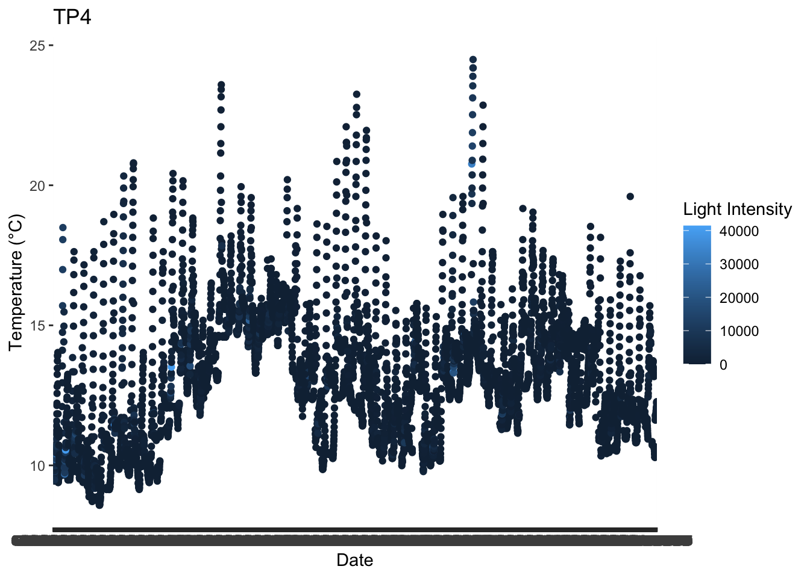

Show code
library(tidyverse)
library(here)You have a set of 4 .csv files in data/homework. Each file is a timeseries of temperature and light data collected in tide pools in Oregon by Jenn Fields. Bring in all 4 files and calculate the mean and standard deviation of both temperature (Temp.C) and light (Intensity.lux) for each tide pool.he output of embedded code. You can embed code like this:
library(tidyverse)
library(here)First, test out the data path
testdata <- read_csv(here("Week_13", "data", "homework", "TP1.csv"))
glimpse(testdata)Rows: 5,981
Columns: 7
$ PoolID <dbl> 1, 1, 1, 1, 1, 1, 1, 1, 1, 1, 1, 1, 1, 1, 1, 1, 1, 1, …
$ Foundation_spp <chr> "Phyllospadix", "Phyllospadix", "Phyllospadix", "Phyll…
$ Removal_Control <chr> "Control", "Control", "Control", "Control", "Control",…
$ Date.Time <chr> "6/16/19 0:01", "6/16/19 0:16", "6/16/19 0:31", "6/16/…
$ Temp.C <dbl> 10.21, 10.08, 10.16, 10.12, 10.08, 10.08, 10.04, 10.04…
$ Intensity.lux <dbl> 0, 0, 0, 0, 0, 0, 0, 0, 0, 0, 0, 0, 0, 0, 0, 0, 0, 0, …
$ LoggerDepth <dbl> 0.15, 0.15, 0.15, 0.15, 0.15, 0.15, 0.15, 0.15, 0.15, …Next, list files in a directory
# path to the folder on my computer
CondPath <- here("Week_13", "data", "homework")
# List all files in that path matching a pattern, anything with ".csv"
files <- dir(path = CondPath, pattern = ".csv")
files[1] "TP1.csv" "TP2.csv" "TP3.csv" "TP4.csv"# One row for each file and 5 columns
oregon_data <- tibble(filename = rep(NA, length(files)), # telling the data set to match the length to assigned file
mean_temp = rep(NA, length(files)),
temp_sd = rep(NA, length(files)),
mean_light = rep(NA, length(files)),
light_sd = rep(NA, length(files)))
oregon_data# A tibble: 4 × 5
filename mean_temp temp_sd mean_light light_sd
<lgl> <lgl> <lgl> <lgl> <lgl>
1 NA NA NA NA NA
2 NA NA NA NA NA
3 NA NA NA NA NA
4 NA NA NA NA NA Testing the first line of code:
# Test by reading in the first file
raw_data <- read_csv(paste0(CondPath, "/", files[1]))
head(raw_data)# A tibble: 6 × 7
PoolID Foundation_spp Removal_Control Date.Time Temp.C Intensity.lux
<dbl> <chr> <chr> <chr> <dbl> <dbl>
1 1 Phyllospadix Control 6/16/19 0:01 10.2 0
2 1 Phyllospadix Control 6/16/19 0:16 10.1 0
3 1 Phyllospadix Control 6/16/19 0:31 10.2 0
4 1 Phyllospadix Control 6/16/19 0:46 10.1 0
5 1 Phyllospadix Control 6/16/19 1:01 10.1 0
6 1 Phyllospadix Control 6/16/19 1:16 10.1 0
# ℹ 1 more variable: LoggerDepth <dbl>mean_temp <- mean(raw_data$Temp.C, na.rm = TRUE) #test
sd_temp <- sd(raw_data$Temp.C, na.rm = TRUE)
mean_temp[1] 13.27092sd_temp[1] 2.324037for (i in seq_along(files)) { # loop over each file (1, 2, 3, 4), This part confuses me
}Adding it over the raw data files
for (i in seq_along(files)) { # filling in the dataframe
raw_data <- read_csv(paste0(CondPath, "/", files[i])) # what files to load in
oregon_data$filename[i] <- files[i] # assigning the rows
oregon_data$mean_temp[i] <- mean(raw_data$Temp.C, na.rm = TRUE) # ave. temp
oregon_data$temp_sd[i]<- sd(raw_data$Temp.C, na.rm = TRUE) # standard deviation
oregon_data$mean_light[i] <- mean(raw_data$Intensity.lux, na.rm = TRUE) # ave. light
oregon_data$light_sd[i] <- sd(raw_data$Intensity.lux, na.rm=TRUE) # standard deviation
oregon_data
}file_names <- dir(path = CondPath, pattern = ".csv") # just the file names
for (i in seq_along(file_names)) { # applying the loop to all 4 files
raw_data <- read_csv(paste0(CondPath, "/", file_names[i])) # following the same path to data
site_name <- str_remove(file_names[i], "\\.csv") # drop ".csv" for the title
p1 <- ggplot(raw_data, aes(x = Date.Time, y = Temp.C, color = Intensity.lux)) + #greating ggplot using 4 data sets
geom_point() + # geompoint seems to make the most sense
labs(title = site_name, x = "Date", y = "Temperature (°C)", color = "Light Intensity") #title will change according to file
ggsave(here("Week_13", "outputs", "for_loops", paste0(site_name, "_temp.png")), # save all plots in this location
plot = p1, width = 6, height = 4)
}
p1
Listing files in directory again
# path to the folder on my computer
CondPath <- here("Week_13", "data", "homework")
# List all files in that path matching a pattern, anything with ".csv"
files <- dir(path = CondPath, pattern = "\\.csv$", full.names = TRUE)
files[1] "/Users/jazzychang/Desktop/MBIO_612/R repositories/Chang/Week_13/data/homework/TP1.csv"
[2] "/Users/jazzychang/Desktop/MBIO_612/R repositories/Chang/Week_13/data/homework/TP2.csv"
[3] "/Users/jazzychang/Desktop/MBIO_612/R repositories/Chang/Week_13/data/homework/TP3.csv"
[4] "/Users/jazzychang/Desktop/MBIO_612/R repositories/Chang/Week_13/data/homework/TP4.csv"Read in the files using map()
data <- files |>
set_names() |> # names each list element with its file name
map(read_csv) |> # a list of 4 dataframes
list_rbind(names_to = "filename") # stack them; list names go in a "filename" column, has the entire name
data# A tibble: 23,922 × 8
filename PoolID Foundation_spp Removal_Control Date.Time Temp.C Intensity.lux
<chr> <dbl> <chr> <chr> <chr> <dbl> <dbl>
1 /Users/… 1 Phyllospadix Control 6/16/19 … 10.2 0
2 /Users/… 1 Phyllospadix Control 6/16/19 … 10.1 0
3 /Users/… 1 Phyllospadix Control 6/16/19 … 10.2 0
4 /Users/… 1 Phyllospadix Control 6/16/19 … 10.1 0
5 /Users/… 1 Phyllospadix Control 6/16/19 … 10.1 0
6 /Users/… 1 Phyllospadix Control 6/16/19 … 10.1 0
7 /Users/… 1 Phyllospadix Control 6/16/19 … 10.0 0
8 /Users/… 1 Phyllospadix Control 6/16/19 … 10.0 0
9 /Users/… 1 Phyllospadix Control 6/16/19 … 9.95 0
10 /Users/… 1 Phyllospadix Control 6/16/19 … 9.56 0
# ℹ 23,912 more rows
# ℹ 1 more variable: LoggerDepth <dbl>data <- files |>
set_names() |>
map(read_csv) |> # reading in multiple data using map()
list_rbind(names_to = "filename") |>
group_by(filename) |> # applying these calculations to each dataset
summarise(mean_temp = mean(Temp.C, na.rm = TRUE),
temp_sd = sd(Temp.C, na.rm = TRUE),
mean_light = mean(Intensity.lux, na.rm = TRUE),
light_sd = sd(Intensity.lux, na.rm = TRUE))
data# A tibble: 4 × 5
filename mean_temp temp_sd mean_light light_sd
<chr> <dbl> <dbl> <dbl> <dbl>
1 /Users/jazzychang/Desktop/MBIO_612/R re… 13.3 2.32 427. 1661.
2 /Users/jazzychang/Desktop/MBIO_612/R re… 13.2 2.31 5603. 11929.
3 /Users/jazzychang/Desktop/MBIO_612/R re… 13.1 2.32 5605. 12101.
4 /Users/jazzychang/Desktop/MBIO_612/R re… 13.2 2.27 655. 2089.Saving multiple plots at once using map()
file_names <- dir(path = CondPath, pattern = ".csv") # just the file names
save_temp_plot <- function(file_name) {
site_name <- str_remove(file_name, "\\.csv")
p2 <- read_csv(paste0(CondPath, "/", file_name)) |>
ggplot(aes(x = Date.Time, y = Temp.C, color = Intensity.lux)) + # same exact plot as before
geom_point() +
labs(title = site_name, x = "Date", y = "Temperature (°C)", color = "Light Intensity")
ggsave(here("Week_13", "outputs", "map", paste0(site_name, "_temp.png")),
plot = p2, width = 6, height = 4)
}
walk(file_names, save_temp_plot)